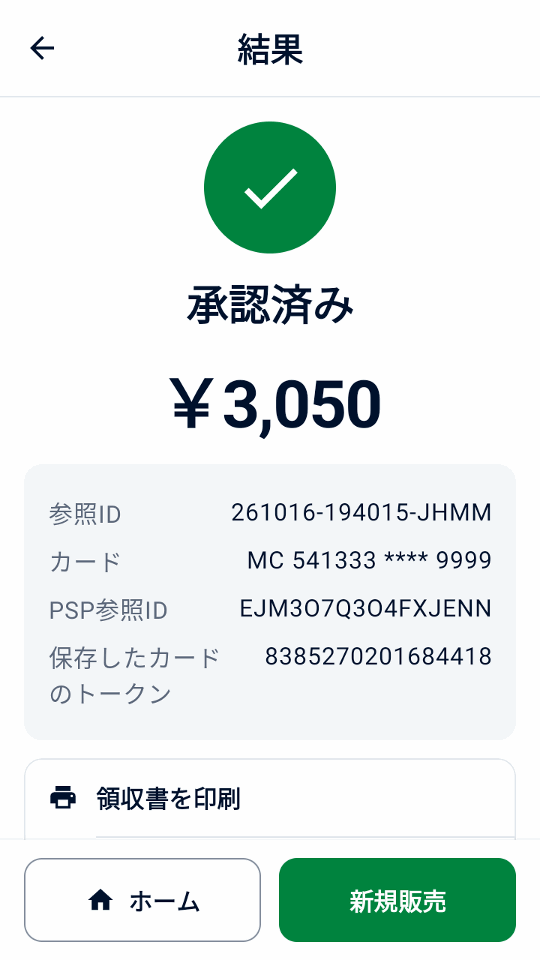

ガイド
デモを試す
Adyen アカウントや決済端末なしで、サンプルの販売・レシート・返金を試せます。
アプリをインストールする
Android 9 以降のスマートフォンまたはエミュレーターを使います。
- デバイスで直接ダウンロードリンクを開くか、カメラでこのコードを読み取ります。

- デバイスで APK を開き、Android の案内に従ってブラウザーやファイルマネージャーからのインストールを許可します。
- ようこそ画面で デモを試す を選び、続ける をタップします。
販売と返金を試す
- ホームで 新規販売 をタップし、サンプル商品を 1 つ選びます。
- 領収書を印刷 をタップし、合計を確認して 領収書をメール送信 をタップします。
- 領収書を確認します。
- 取引履歴 を開き、販売を選んで 返金 をタップします。全額返金を選び、確認します。


ほかのデモを試す
- 設定 › シミュレーターで、決済結果、待ち時間、プリンターの有無を選びます。 オフライン承認をオンにすると、取引履歴と端末集計照合で オフラインの警告を確認できます。
設定 › データと転送でサンプルデータを追加またはサンプルデータを削除を 使います。サンプルにはデモと表示されます。サンプルはデモの日次合計とレポートに含まれます。追加すると領収書の事業者情報が 架空のカフェに置き換わり、ロゴが未設定ならそのロゴも追加されます。削除してもご自身の商品、履歴、設定、ロゴは残ります。
決済リンクは API 認証情報なしでオフラインで動作し、画面と領収書にはデモと表示されます。この QR コードで支払いはできません。 完了させるには支払いをシミュレートをタップします。
シミュレーターは Mini mPOS の動作を示すもので、端末や Adyen アカウントの対応状況は示しません。音声ガイド、オフライン承認、 Adyen 機能などは模擬的に再現されるだけなので、実際の TEST 端末で確認してから利用してください。
デモでは、会計時の端末でのチップと Adyen Giving もスイッチがオフの状態で表示され、 ギフトカードでは SVS ギフトカードを使えます。サンプル履歴には、チップ、寄付、オフライン承認、 顧客参照 CUST-1042 で保存されたカードが含まれ、そのカードにはトークンから請求できます。 設定 › シミュレーターでサーチャージを設定するか、一部承認（%）を 100 未満にすると、これらの流れを試せます。100 の場合、Adyen のテストカードと同様に、末尾が 139 の金額が一部承認されます。 実際の決済を設定するときは、残しておく場合を除き、これらのデモ機能を無効にするよう案内されます。
実際の接続設定に進む
接続するには、設定 › シミュレーターで実際の決済を設定、設定に進むの順に タップします。TEST や LIVE を確定するとローカル履歴はすべて削除されます。サンプル商品と領収書の情報は残るため、 実際の決済の前にサンプルを削除し、事業者情報を確認してください。まず TEST で検証します。